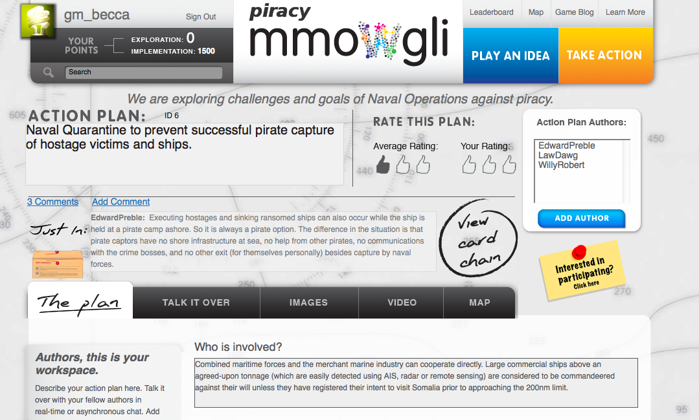
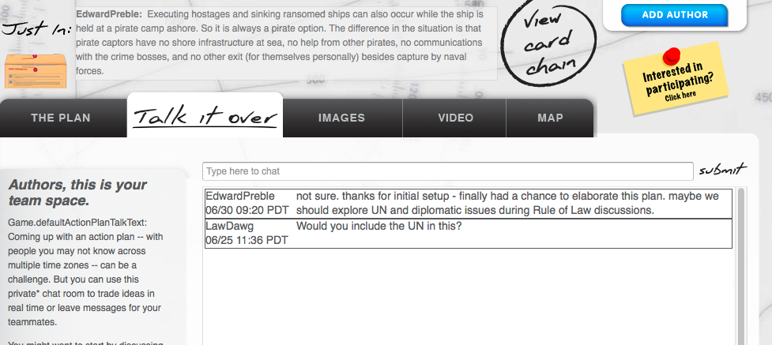
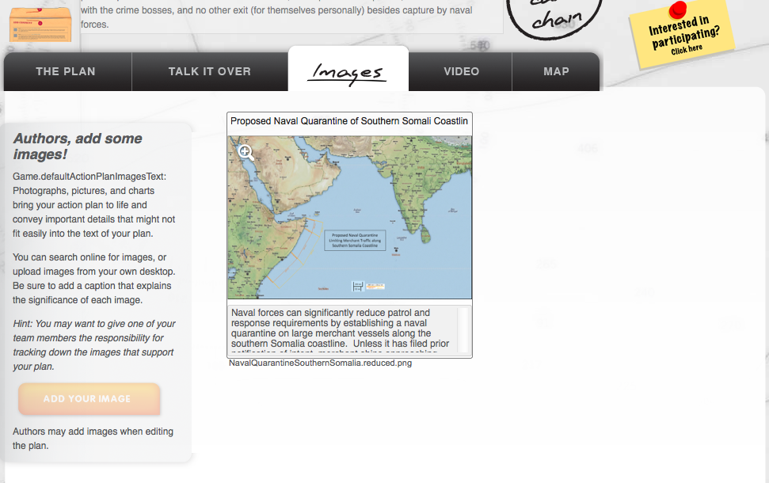
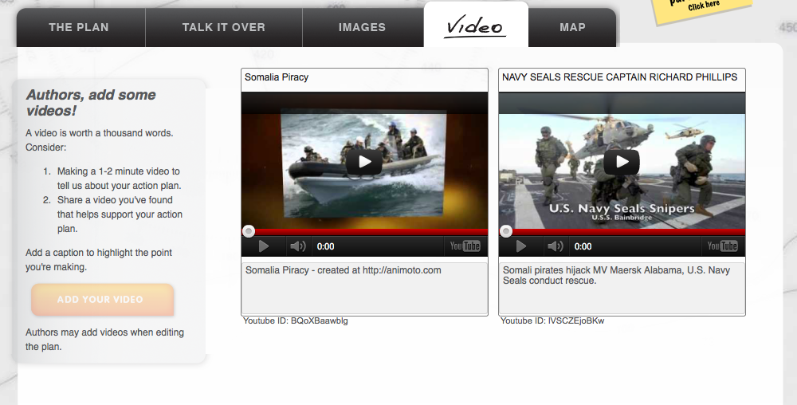
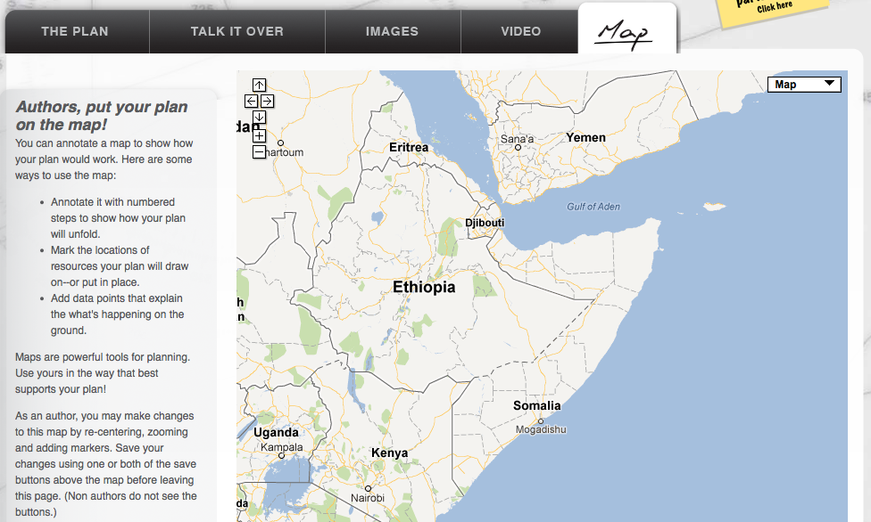
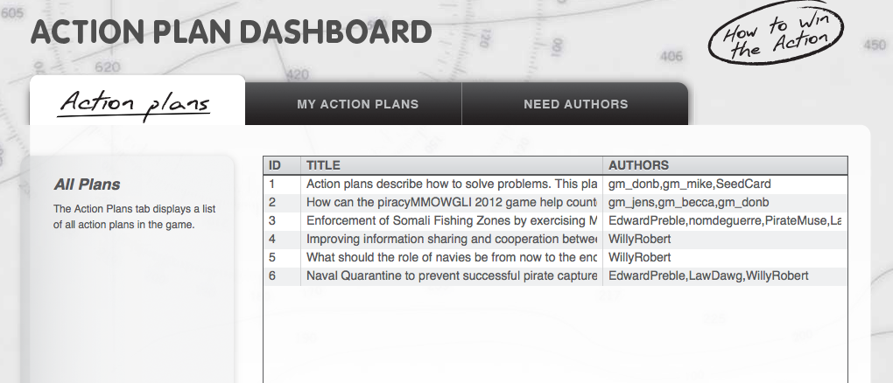
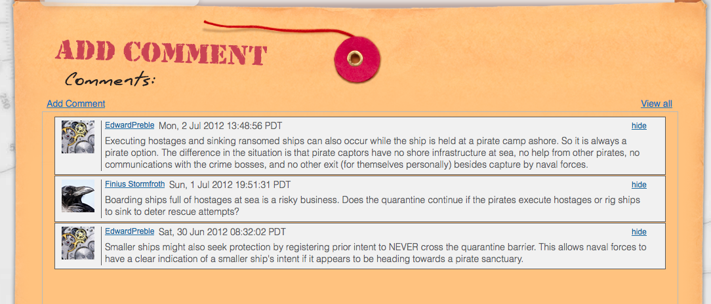

Once long card chains start to emerge, the gamemasters may invite you to Take Action. That means three things: authoring action plans, reviewing them, and rating them. These are good ways to rack up Innovation Points, so you can watch your score soar!
There are several ways to become an author on an action plan. You must either be
(a) You can be included on the original action-plan invitation. Initial invitations are built by a game master from an interesting card chain.
(b) You can be invited by one of the other authors of the action plan. Authors can be contacted via the action-plan public comments envelope or by in-game email (if they opted in). (Follow these steps: Step 1, Step 2, Step 3.)
(c) You can ask to create a new action plan via an Action Plan Request at http://portal.mmowgli.nps.edu/action-plan-request.
(d) You can request help from a game master via a Trouble Report at http://portal.mmowgli.nps.edu/trouble. Game masters can ask authors for you or provide other advice.
It's an important honor—and responsibility—to receive an invitation to author an Action Plan. Here is what an Action Plan display looks like:

There is a lot of information here! You can choose to view the original card chain, view the most recent comment, and view who the authors are. Author whose names are in parentheses are pending - they have not yet accepted the invitation to author.
Confirmed authors and Game Masters can select the ADD AUTHOR button to invite new authors to join the Action Plan.
Each Action Plan originates from a chain of idea cards. Take a look at the original card chain and then "Talk It Over" with your co-authors in the online chat. If your co-authors are busy or in another time zone, go ahead and start filling out the plan. They can all jump in and edit it later. Tell the story. This is the heart of action planning. Capture the essence of the plan in the headline, then explain the what, how, and why of this plan. You can further illuststrate what you mean with images, videos, and map annotations.
Authors: please spell all words fully for searchability and clarity. Abbreviations can be confusing - and you no longer have the 140-character limit to deal with in Action Plan entries.
Please also format your prose as simple paragraphs since (a) the action-plan report output is formatted as plain text HTML, and (b) "bullet" punctuation (hyphens etc.) will be --interspersed and --confusing.
In the Action Plan tab for Author Chat, authors can discuss the details of their plan. Please note that other players cannot use or see the shared author chat while in the game - but it is published later as part of the game report.
If you want to communicate privately with a single author, the best bet is to send them email via the game. Each player's profile page shows whether they receive in-game mail, regular email, both, or no mail at all..
Public feedback for all authors (and everybody else) can be added to the "comments envelope" at the bottom of the Action Plan.

In this tab you can add a new image via web address, upload a new image of your own, replace an existing image, or else delete a prior image. You can also edit the title and caption of each image. Click on the correct buttons to perform the task you want.

In this tab you can add a link to a YouTube video. You can also edit the title and caption of each video.


Each Action Plan includes a map section which you can edit.
We're planning on building additional map support. Future features will include adding or saving KML map annotations, including maps in output reports, map captions, hiding, etc.
We are currently using Leaflet for maximum portability on all browsers. You can separately use other map tools to create images for your Action Plan.
If you don't get an invitation to author, you can search a list of action plans that need authors on the Action Plan Dashboard.

View the details of any action plan by clicking on its row to select it.
Whether you're author or not, you can build your own Innovation Points by commenting on action plans of others. You get points for every constructive comment, and your comments will help the gamemasters choose the winning action plans. (But watch out! If you add meaningless comments just to get points, gamemasters may mark the comment UNCONSTRUCTIVE, and you'll lose your points—and your reputation.)

Check out the opportunities to score big here.
Rate every action plan! As a game move draws to a close, you'll see the thumbs-up rating come to life. You can give action plans one, two, or three thumbs up. Here's how to rate them:
Not sure where to begin? Watch the How to Win with Action Plans video.
Remember, not every move in a game always includes Action Plan creation. You'll know action plans are available two ways: if you get an invitation to author an action plan, and if the Take Action button at the top of every page is active.
{kind=link}
{kind=link}
{kind=link}